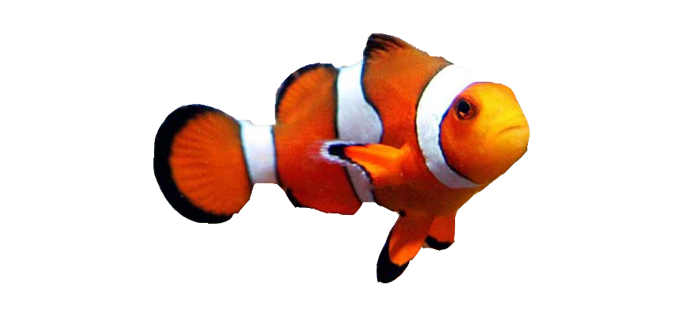

Clown Fish

Common Name: Filefish
Scientific Name: Acreichthys tomentosus
Adult Size: 5 inches
Habitat: Indo-Pacific
Behavior: Peaceful
Lifespan: 3 Years
Diet: Omnivore
Reproduction: Separate male and female, with the females showing rounded abdomen prior to fertilization. Female will lay eggs on a rock and guard them until hatched
Cool Facts: Known for their ability to eat nuisance aiptasia, can also modify coloration
Other names: Foolfish, Leatherjackers, Shingles